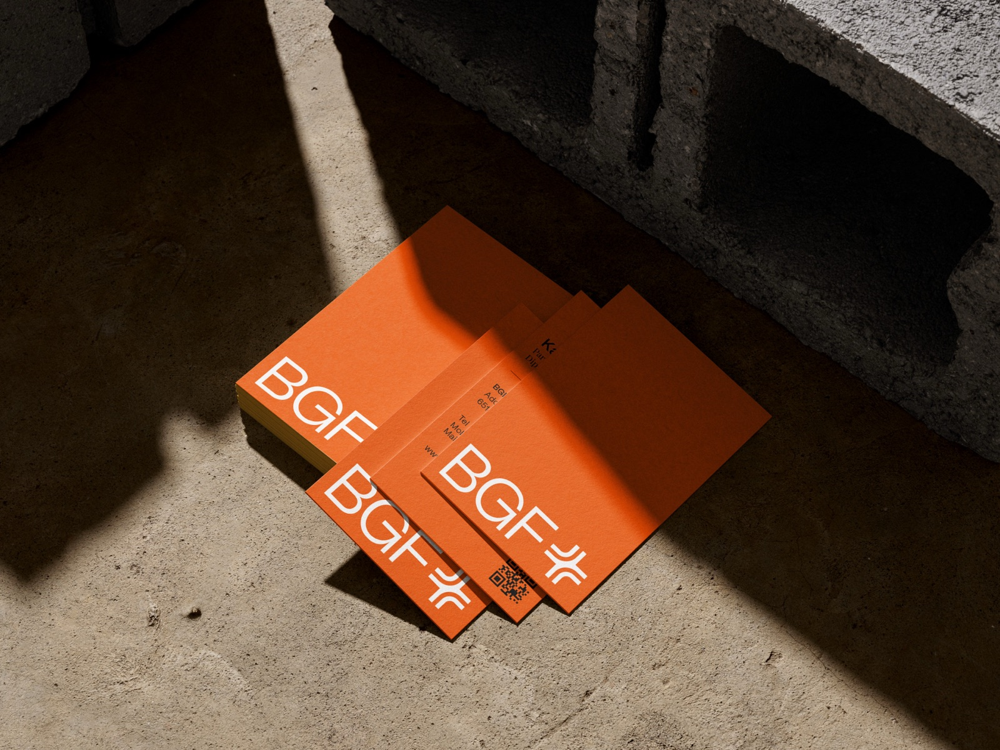
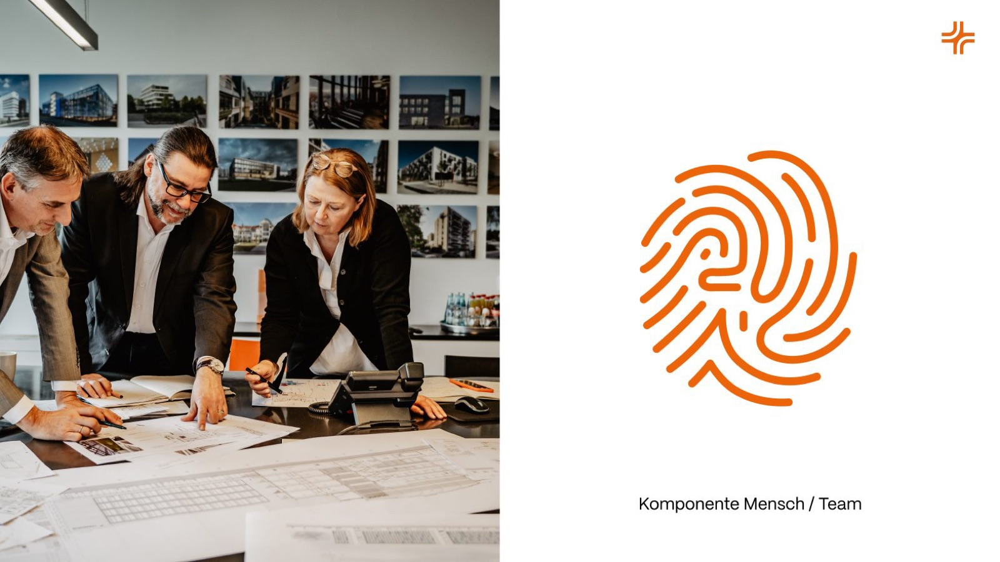
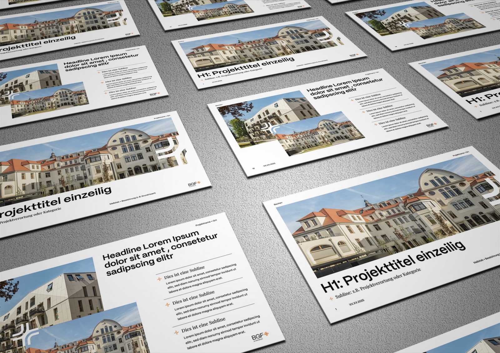
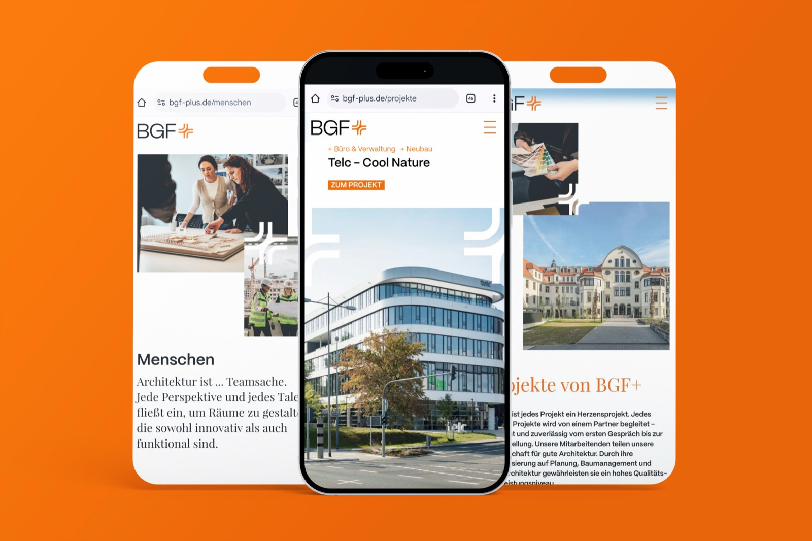
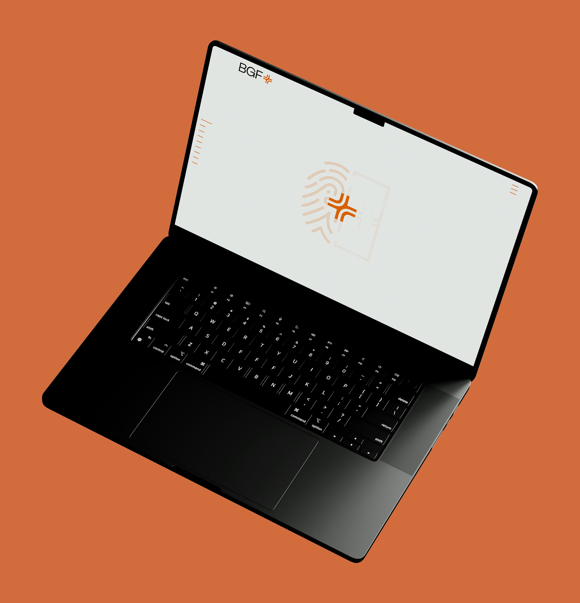
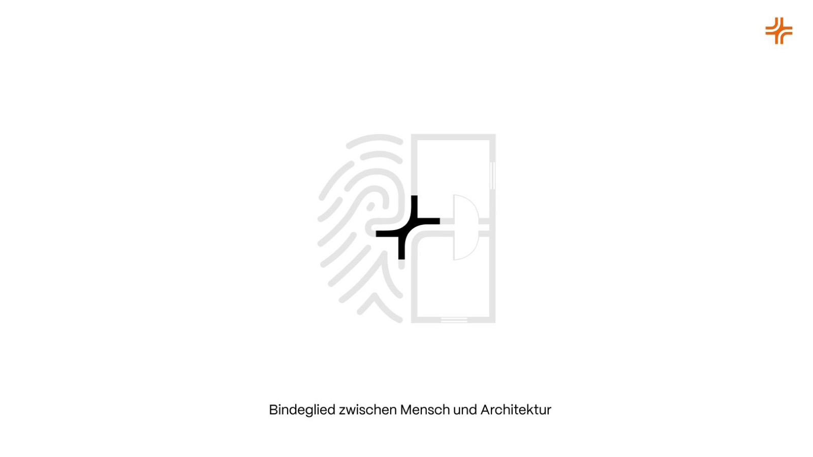
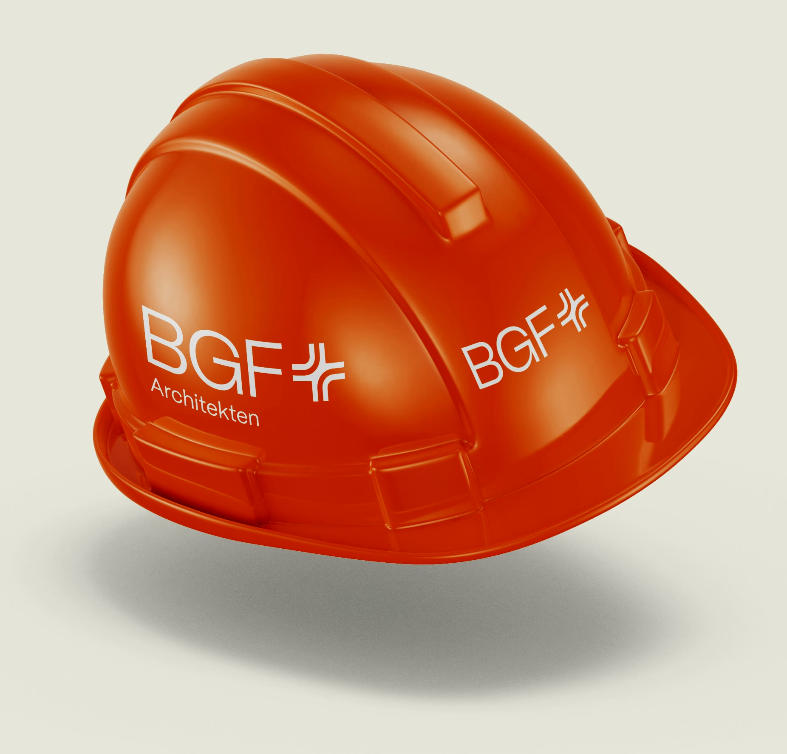
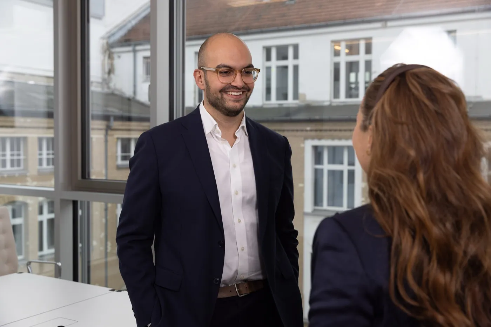
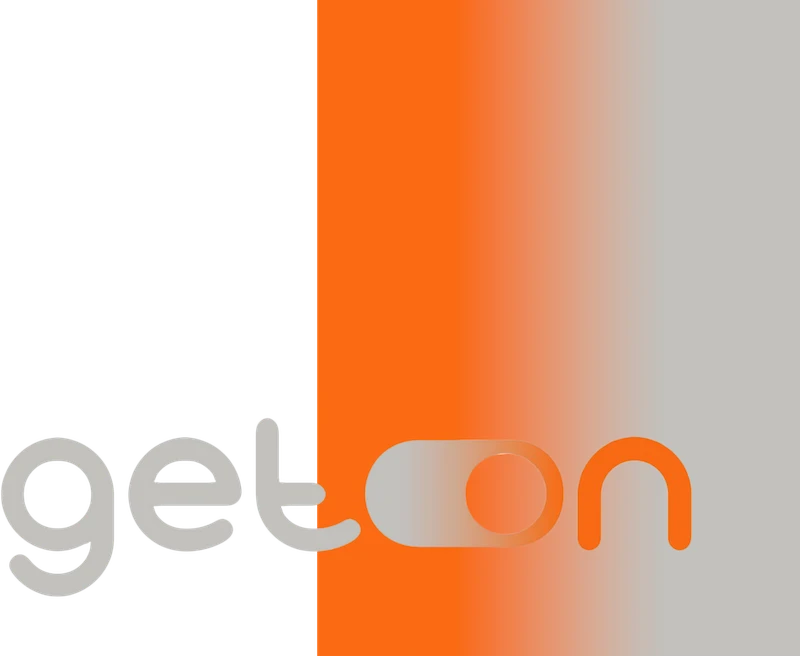

Gewachsene Architekturqualität im Auftritt sichtbar machen.
Ausgangslage
BGF+ Architekten arbeitet seit 50 Jahren im Rhein-Main-Gebiet: über 60 Mitarbeitende, Bestandsbau, öffentlicher Hochbau, komplexe Transformationsaufgaben. Das Portfolio war stark — der Auftritt transportierte den Anspruch nicht mehr.
Mehr zur Ausgangslage
Intern war das Büro längst in Bewegung: ein Generationenwechsel, ein gestärktes Selbstverständnis im Umgang mit Bestand und Transformation, neue Anforderungen im Recruiting. Das bestehende Erscheinungsbild bildete das Selbstverständnis des gewachsenen, vielfältigen Teams nicht mehr ab — und differenzierte im Wettbewerb nicht.
Die Aufgabe: die Marke strategisch, visuell und kommunikativ neu positionieren — mit einer Identität, die nach außen Orientierung gibt und nach innen Identifikation stiftet. Grundlage war eine Befragung der Mitarbeitenden; begleitend entstand eine Foto- und Videoproduktion, die Team, Haltung und Detail im Bild zusammenführt.
Strategie & Designsystem
Im Zentrum stand das „+“. Aus dem Namensbestandteil wurde das strategische Symbol der Marke: das Mehr an Perspektive, an Verantwortung, an Menschlichkeit im architektonischen Prozess. Eine Marke, die nicht behauptet, sondern begleitet — nicht inszeniert, sondern stabilisiert.
Zielgruppen und Tonalität
Nach außen: öffentliche Auftraggeber, Investoren und Projektentwickler, die Sicherheit, Verlässlichkeit und partnerschaftliche Zusammenarbeit suchen. Nach innen: Architekt:innen und Bauleiter:innen, die Haltung, Teamgeist und Sinn in ihrer Arbeit suchen.
Die Tonalität dazu: ruhig, besonnen, präzise. Eine Stimme, die durch Klarheit wirkt, nicht durch Inszenierung.
Logo und Signet
Der bestehende Schriftzug bleibt in seiner Charakteristik erhalten; das „+“ rückt als zentrales Gestaltungselement in den Mittelpunkt. Das Signet funktioniert als Bindeglied — zwischen Architektur und Mensch, zwischen Anspruch und Alltag.
Typografie und Farbwelt
PP Mori (geerdet, funktional) und Playfair Display (fein, emotional) bilden das Spannungsverhältnis aus technischer Präzision und menschlicher Nähe ab. Die Farbwelt bleibt architektonisch zurückhaltend: Off-White, Warm Orange, Schwarz.
Medien und Anwendungen
Von Geschäftsausstattung über Präsentationen bis zu digitalen Templates entstand eine medienübergreifende Systematik. Besonders für Employer Branding und Akquise sorgen formatübergreifende Vorlagen für ein konsistentes, anschlussfähiges Erscheinungsbild.
Website bgf-plus.de
Konzeption und Umsetzung der neuen Website unter bgf-plus.de. Die Seite arbeitet mit scrollgesteuerten Transitions, Parallax-Ebenen und weichen Seitenübergängen: Inhalte bauen sich auf und führen von Abschnitt zu Abschnitt.
Räumliche Tiefe als digitale Entsprechung der architektonischen Arbeit — die Website übersetzt Haltung in Bewegung, Substanz in Interaktion.










„Was mich an BGF+ beeindruckt hat, ist die Klarheit im Inneren. Die Marke war nicht unentschieden — sie war nur noch nicht sichtbar gemacht worden. Unser Job war nicht, etwas zu erfinden, sondern zuzuhören, zu strukturieren und sichtbar zu machen, was längst da war: Haltung, Verantwortung, Ruhe, Verlässlichkeit. In Zeiten von Lautstärke ist genau das ein echtes Unterscheidungsmerkmal."
Christian · CONCRETE Brandbuilding

Warum dieses Projekt auch für eure Brand relevant sein könnte:
BGF+ zeigt, wie leise Marken Haltung sichtbar machen: Ein Architekturbüro mit 50 Jahren Geschichte wurde nicht neu erfunden, sondern so geschärft, dass Haltung und Anspruch auch nach außen auf ihrem tatsächlichen Niveau ankommen.
Wenn eure Marke in einem Umfeld agiert, das von Vertrauen, Verantwortung und Langfristigkeit geprägt ist, lohnt sich ein Markenbild, das nicht laut sein muss, um zu wirken — das Orientierung gibt statt zu inszenieren, und relevant bleibt, ohne neu sein zu müssen.
Ihr arbeitet an Projekten mit gesellschaftlichem Anspruch und wollt eure Marke klar, glaubwürdig und langfristig aufstellen?
Dann sprechen wir gerne darüber, wie man Substanz sichtbar macht.
Weitere Projekte
 NOEY Solutions · Technologie
NOEY Solutions · Technologie Kinderzahnarzt Wackelzahn · Gesundheit
Kinderzahnarzt Wackelzahn · Gesundheit Little Big Pasta · Food
Little Big Pasta · Food medium Architekten · Architektur
medium Architekten · Architektur Conlivo · Architektur
Conlivo · Architektur CA'N SORT · Food
CA'N SORT · Food Street Gourmet · Food
Street Gourmet · Food MDB Finance · Finance
MDB Finance · Finance SKNMETRICS · Gesundheit
SKNMETRICS · Gesundheit hy helpyourself · Gesundheit
hy helpyourself · Gesundheit SOLIT Marketing · Finance
SOLIT Marketing · Finance Poodlewohl · Consumer
Poodlewohl · Consumer Immofolia · Architektur
Immofolia · Architektur Cologne Comedy Festival · Kultur
Cologne Comedy Festival · Kultur Baked · Food
Baked · Food FinaPlus · Finance
FinaPlus · Finance Highr · Community
Highr · Community Digital2gether · Technologie
Digital2gether · Technologie Aconvia · Technologie
Aconvia · Technologie
System 360 · Finance Noveltea · Food
Noveltea · Food Potatohead Pictures · Kultur
Potatohead Pictures · Kultur be.care · Technologie
be.care · Technologie me, my life, my job · Community
me, my life, my job · Community pause and play · Kultur
pause and play · Kultur Project Haya · Community
Project Haya · Community the moc · Food
the moc · Food Maleco · Technologie
Maleco · Technologie Klang2 · Community
Klang2 · Community Boneß & Euteneuer · Finance
Boneß & Euteneuer · Finance Good Humor · Kultur
Good Humor · Kultur Lieblings-Zahnarzt · Gesundheit
Lieblings-Zahnarzt · Gesundheit AdSuits · Finance
AdSuits · Finance Mine Mina · Consumer
Mine Mina · Consumer ergobag · Consumer
ergobag · Consumer we:celebrate Streetfood · Food
we:celebrate Streetfood · Food
GET.ON · Gesundheit Luis + Lea · Community
Luis + Lea · Community